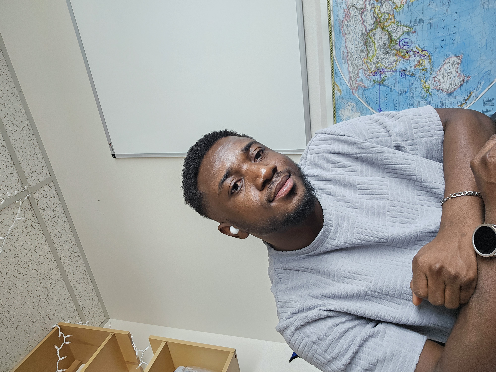

About Me
I am currently YOUR ROLE at YOUR AFFILIATION in CITY/STATE, working in the section/team for YOUR GROUP. I hold a Ph.D. in YOUR FIELD, and my research focuses on SHORT FOCUS (e.g., precipitation processes and change under a warming climate). Understanding how the nature, frequency, and intensity of YOUR SUBJECT evolve is critical for building resilient systems, as these changes directly impact OUTCOMES (e.g., water resources, flood/drought risk). Learn more about my specific research interests here.
You can also find me on

Research interests
Add 3–6 bullet points or short paragraphs describing themes, methods, and datasets.
Publications
Add selected publications with links to DOI/arXiv.
Teaching
Courses, guest lectures, mentoring, or materials.